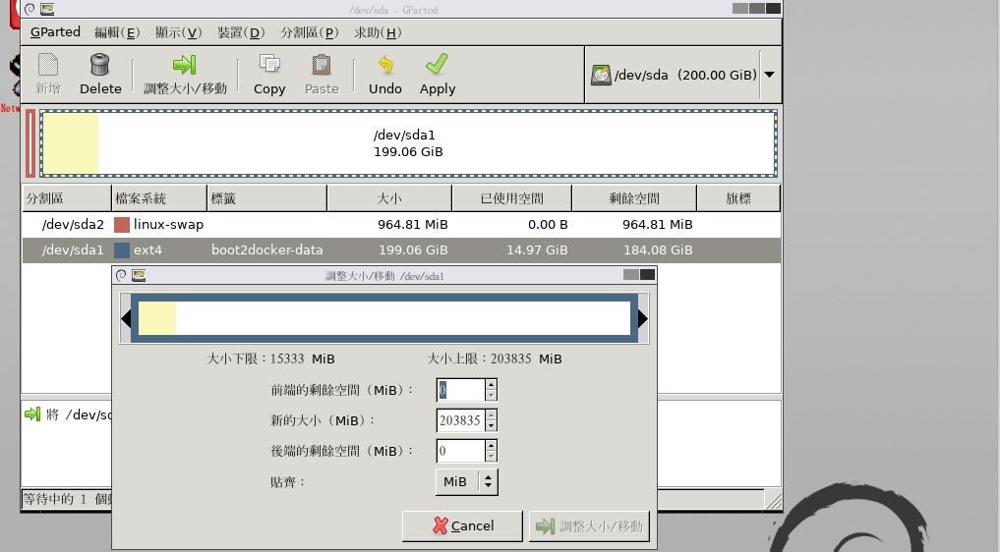
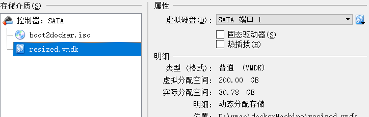
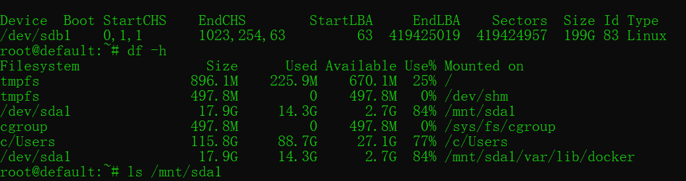
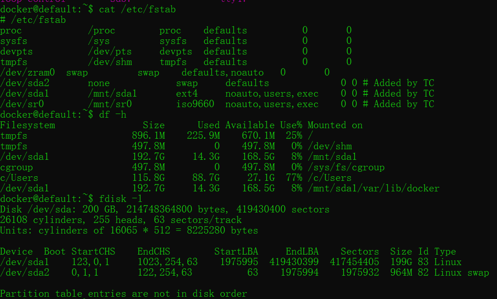
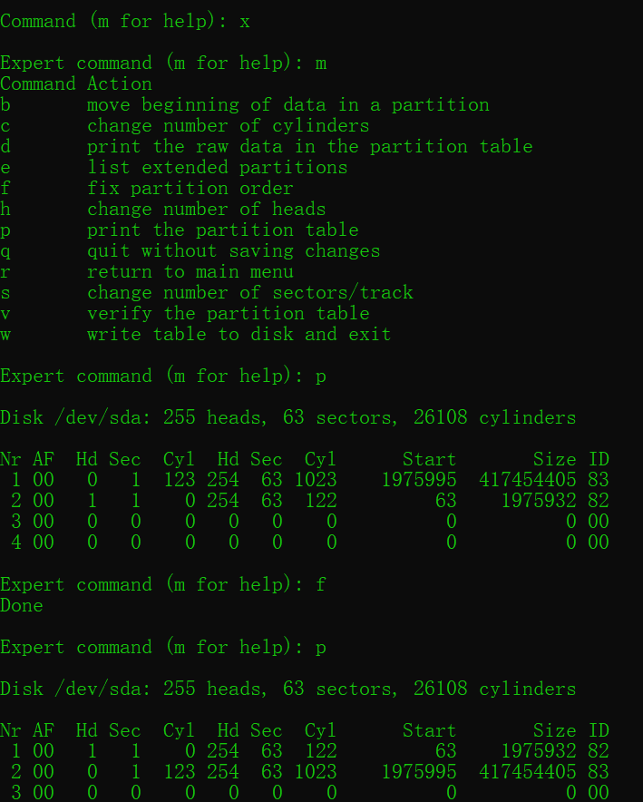
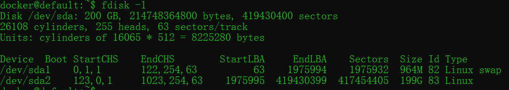
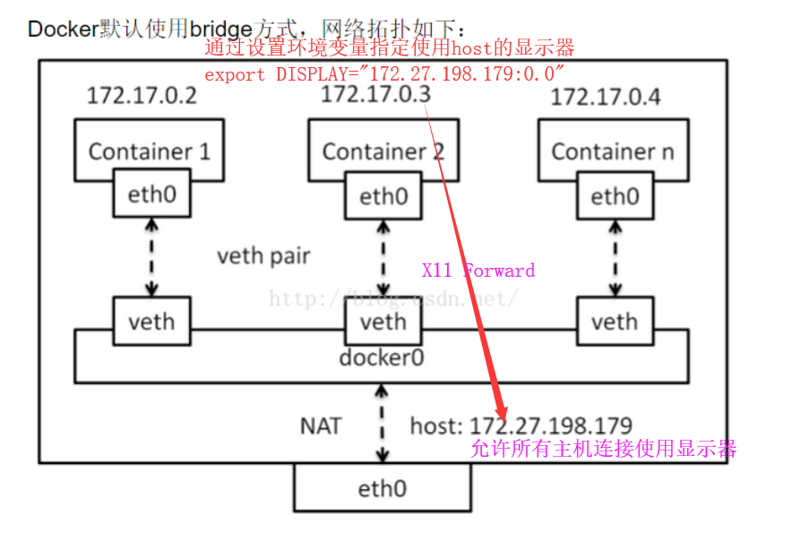
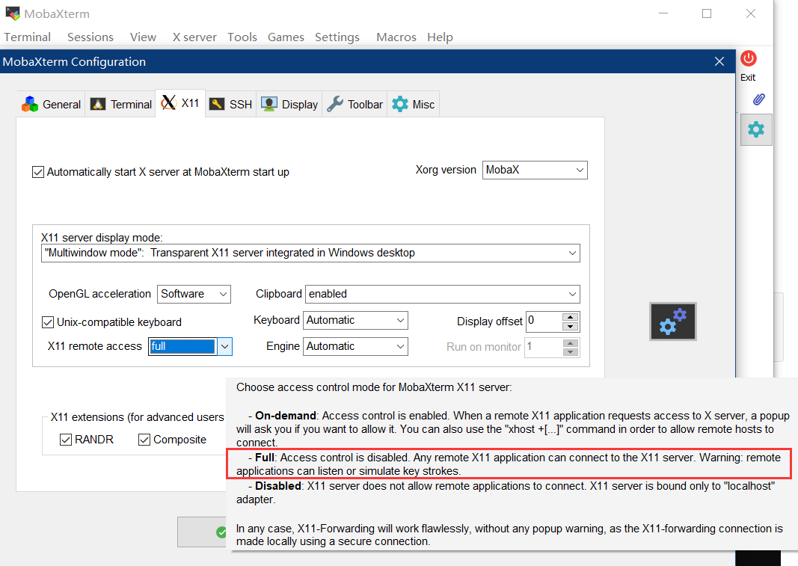
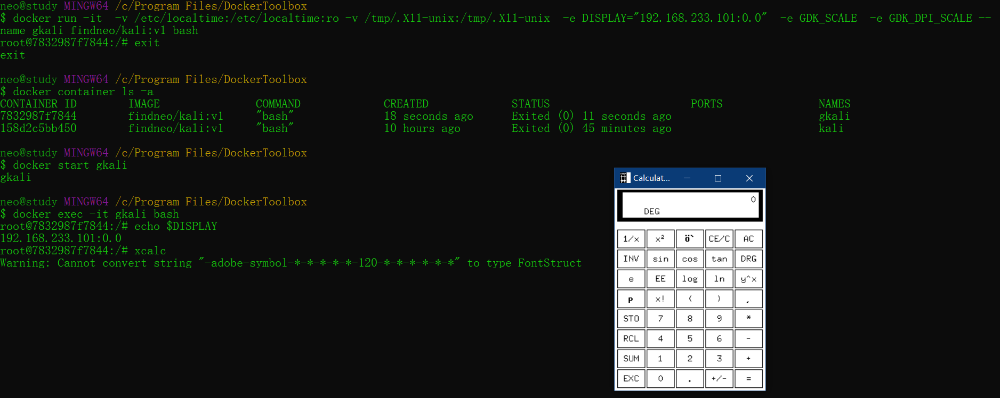

在win10家庭版上的Docker中使用Kali
全程需保证保证网络畅通
安装Docker
从 https://docs.docker.com/toolbox/toolbox_install_windows/ 下载DockerToolbox.exe 。关闭其他程序，右键管理员运行，选项可全部保持默认（如果电脑上未安装Git，在安装过程中需注意勾选）。
桌面可看到名为``Docker Quickstart Terminal`的快捷方式，右键管理员运行，等待直到出现可交互命令行。
修改默认存储位置到非系统盘
在上一步出现的可交互命令行界面运行
docker-machine.exe stop default关闭基础虚拟机。运行桌面上名为
Oracle VM VirtualBox的快捷方式。- 在
管理->虚拟介质管理器【CTRL+D】中复制disk.vmdk到D盘 ，注意最好保持vmdk 格式。 - 选中
default虚拟机，右键设置->存储->控制器：SATA->添加虚拟硬盘中添加D盘的disk.vmdk。删除C盘的disk.vmdk。保存设置。
- 在
回到 命令行，运行
docker-machine.exe start default启动基础虚拟机。
下载Kali基础镜像并配置容器
（以下命令均在上述命令行中输入）
docker pull kalilinux/kali-linux-docker拉取Kali基础镜像，约700+M。docker run -it --name kali kalilinux/kali-linux-docker /bin/bash基于该镜像启动一个容器并命名为kali。apt update && apt full-upgrade && apt auto-remove && apt-autoclean安装工具前的准备工作。此处是一小段等待。apt install kali-linux-all安装Kali的工具包。此处是漫长等待。 如果报错按错误提示操作即可。
配置msf数据库
service postgresql startsu postgrescreateuser username -P设置数据库用户账户密码createdb --owner=username dbname && exit创建数据库cd /usr/share/metasploit-framework/config && cp database.yml.example database.yml && vi database.yml填好username,pass,dbname 。msfconsoledb_status查看数据库连接状态-
db_connect username:password@localhost/dbname//若没成功连接数据库，则手动连接
常用基本操作
数据管理
文件传输
docker cp kali:/root/testfile testfiledocker cp test kali:/root/test
数据卷
docker volume create my-voldocker volume lsdocker run --mount source=my-vol,target=/webapp ...- 对应目录是default虚拟机的
/var/lib/docker/volumes/my-vol，并不能直接操作，理论上应该先在虚拟机和主机间共享文件夹，然后再使用数据卷。
挂载主机目录
docker run --mount type=bind,source=/src/webapp,target=/opt/webapp ...
对镜像(image)的操作
docker search kali在线搜索镜像。docker pull kalilinux/kali-linux-docker下载镜像。docker image ls [-a]列出本地镜像。docker image rm kalilinux/kali-linux-docker删除本地镜像。docker commit -a findneo -m "kali-all-tools installed;msfdb configured" kali findneo/kali:v1生成镜像保存与加载本地镜像
1
2
3
4
5
6
7$ docker image ls
REPOSITORY TAG IMAGE ID CREATED SIZE
findneo/kali v1 16b856910432 About an hour ago 13.2GB
kalilinux/kali-linux-docker latest b8fe82f15421 2 months ago 749MB
docker save -o D:\findneoandOriginKali.tar findneo/kali:v1 kalilinux/kali-linux-docker
docker load -i D:\findneoandOriginKali.tar
对容器(container)的操作
docker run --rm kalilinux/kali-linux-docker /bin/echo "hi"
以kalilinux/kali-linux-docker镜像为基础启动一个新的容器，执行命令/bin/echo "hi"，退出、终止并删除容器。docker run -it --name kali kalilinux/kali-linux-docker /bin/bash
以kalilinux/kali-linux-docker镜像为基础启动一个新的容器，命名为kali，提供bash终端 。执行exit将退出、终止但保留容器。docker start kali启动名为kali的容器并在后台运行，相当于开机 。docker exec -it kali bash进入kali的bash终端。执行exit将退出但不终止容器。docker stop kali终止名为kali的容器，相当于关机 。docker container ls -a列出所有容器，不带-a参数仅列出当前运行中的容器。docker container rm kali删除指定容器。若容器正在运行需加--force参数。docker container export -o D:\mykaliv1.tar kali导出容器，相当于拍摄快照 。docker import D:\mykaliv1.tar- test/kali:v1导入容器，相当于还原快照 。
扩容
扩容磁盘
1 | 关闭容器和default虚拟机 |
调整分区
- 从 https://gparted.sourceforge.io/download.php 下载gparted-live-0.31.0-1-amd64.iso。
- 在default虚拟机设置面板的
存储->控制器->添加虚拟光驱中将gparted-live-0.31.0-1-amd64.iso 加到SATA0端口，使其开机第一个启动。移除原有磁盘，将扩容后的磁盘放在原来磁盘的位置。 启动->无界面启动，使用GParted 调整磁盘空间。Apply。双击桌面EXIT，选择shutdown退出，按右CTRL键使焦点回到主机
- 恢复虚拟机存储设置至下入状态

查看调整分区是否成功
docker-machine start defaultdocker-machine ssh default进入default虚拟机的shell，去看看分区扩容是否成功查看并记录当前状态
fdisk -ldf -hcat /etc/fstab(/boot/grub/menu.lst文件没找到)
对比前后状态可以看到已经成功了


Partition table entries are not in disk order
fdisk -l 出现Partition table entries are not in disk order 问题。字面上看是分区表和硬盘分区不一致。查资料据说不影响，不过还是试着解决下。
- 参考链接
- 操作步骤
docker-machine ssh defaultsudo -i切换到root权限 (https://stackoverflow.com/questions/32646952/docker-machine-boot2docker-root-password)fdisk /dev/sdax进入专家模式ffix partition orderw写入变化

- 解决后分区状态如下。对比上图可以发现sda1和sda2互换了。

图形界面
参考链接：
- 【微信分享】林帆：Docker运行GUI软件的方法
- shell中获取本机ip地址
- How can I export DISPLAY from a Linux terminal to a Windows PC?
- docker学习8–同主机下容器通信
- What is the $DISPLAY environment variable?
- Docker for GUI-based environments?
- Can you run GUI apps in a docker container?
大致理解Docker网络结构和XX转发流程

启动一个新配制参数的容器，将主机上X11的unix套接字共享到kali容器里面
1 | docker run -it -v /etc/localtime:/etc/localtime:ro -v /tmp/.X11-unix:/tmp/.X11-unix -e DISPLAY="192.168.233.101:0.0" -e GDK_SCALE -e GDK_DPI_SCALE --name gkali findneo/kali:v1 bash |
在Setting->Configuration 里取消MobaXterm的X server的访问控制。

启动容器即可使用GUI。可以使用xcal,xclock,xedit,xmessage,xeyes,xmessage 等等小程序测试X11转发是否正常工作（ls /usr/bin/x* 可以看到更多）

SSH 连入
从容器访问主机可以直接使用主机的IP地址（ipconfig），从主机访问容器实际上是访问boot2docker 虚拟机的IP （docker-machine.exe ssh default "/sbin/ifconfig eth1|sed -n '/inet addr/s/^[^:]*:\([0-9.]\{7,15\}\) .*/\1/p'"）和启动容器时配置的转发端口 （docker run -p 12345:22 ... ）。
1 | 所以理论上这样启动一个容器既可以SSH连入，又可以使用图形界面。 |
参考链接
- https://yeasy.gitbooks.io/docker_practice/content/
- https://blogs.technet.microsoft.com/positivesecurity/2017/09/01/setting-up-kali-linux-in-docker-on-windows-10/
- https://stackoverflow.com/questions/32646952/docker-machine-boot2docker-root-password
- https://ubuntuforums.org/showthread.php?t=1252662
- https://blog.csdn.net/wujiangguizhen/article/details/22857667
- https://stackoverflow.com/questions/11659005/how-to-resize-a-virtualbox-vmdk-file
容器不应该是长久性的东西，要保持容器的可抛弃性，有问题就应该rm掉，数据保存在容器外，然后直接run新的容器。 ——http://www.talkwithtrend.com/Question/233635
看到上面这个，感觉自己的用法可能有点奇怪：）